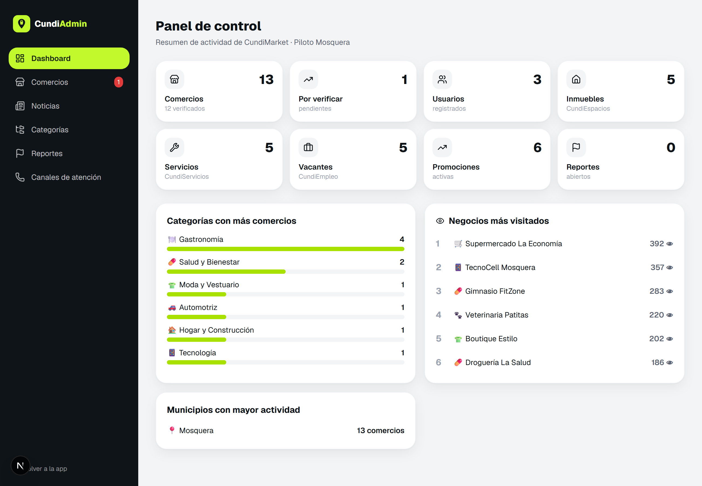
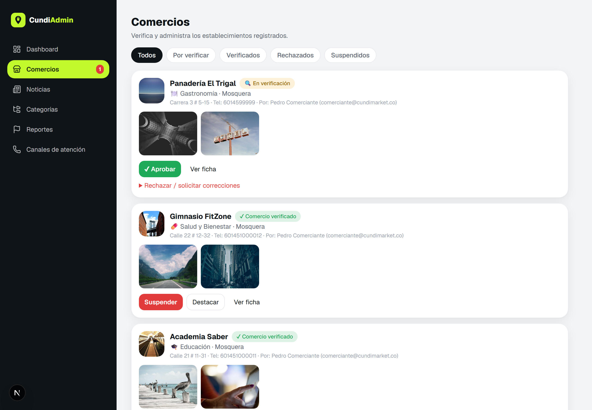
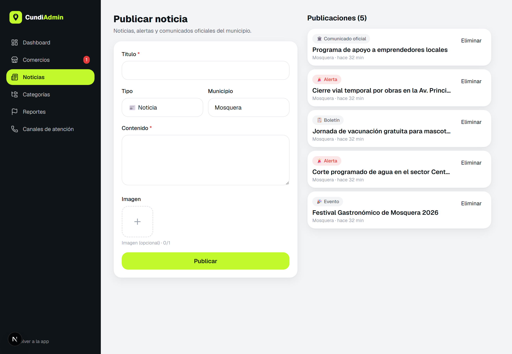

La plataforma
que conecta tu
municipio.
Comercios, inmuebles, servicios, empleo y noticias locales en una sola aplicación. Guía de producto y propuesta de desarrollo.
📍 Piloto: Mosquera
🌎 Escalable a Cundinamarca
📱 iOS · Android · Web (PWA)
Resumen ejecutivo
Un ecosistema digital para el comercio local
CundiMarket es un directorio digital inteligente que centraliza la oferta comercial y de servicios de un municipio. Los comercios se registran gratis y publican su información; los ciudadanos encuentran negocios, promociones, inmuebles, servicios, empleo y noticias oficiales — todo desde el celular.
🏪
Fortalece el comercio local
Da visibilidad digital a tiendas y emprendimientos del municipio, sin costo de entrada.
🤝
Conecta a la comunidad
Ciudadanos, comerciantes, propietarios, técnicos y empresas en un mismo lugar.
✔
Genera confianza
Proceso de verificación de comercios con sello visible que reduce fraudes.
🏛️
Acerca lo institucional
Noticias, alertas y canales de atención municipal al alcance de un toque.
Estado actual: producto funcional construido y navegable (app ciudadana, flujo de comerciante con verificación, 3 módulos, noticias, canales de atención, chatbot y panel administrativo web con analítica). Listo para piloto en Mosquera.
2
tipos de usuario + admin
100%
mobile-first / instalable
CundiMarket
02
El problema y la oportunidad
El comercio local es invisible en lo digital
Hoy
!
Negocios sin presencia digitalDependen del voz a voz; difícil que nuevos clientes los encuentren.
!
Información dispersaHorarios, contactos y promociones en grupos de WhatsApp y volantes.
!
DesconfianzaAnuncios falsos de arriendos, servicios y empleos.
!
Brecha institución–ciudadanoAvisos oficiales que no llegan a tiempo.
Con CundiMarket
✓
Ficha digital gratuitaCada comercio con perfil, fotos, catálogo y contacto directo.
✓
Todo centralizadoBuscar, filtrar y contactar por llamada o WhatsApp en segundos.
✓
Verificación y reportesSello de confianza y moderación desde el panel admin.
✓
Canal municipalNoticias, alertas y teléfonos de emergencia integrados.
La plataforma en 6 secciones
🏪
Comercios
Directorio por categorías con verificación.
🏠
CundiEspacios
Inmuebles: arriendo, venta y permuta.
🛠️
CundiServicios
Técnicos, oficios y profesionales.
💼
CundiEmpleo
Bolsa de empleo municipal.
📰
Noticias
Información oficial y alertas.
🚨
Atención
Líneas de emergencia del municipio.
CundiMarket
03
Recorrido por la app · 1
Acceso e inicio
Onboarding claro, registro con rol (ciudadano o comerciante) y una pantalla de inicio que invita a descubrir el municipio.
Bienvenida
Onboarding con propuesta de valor
Acceso
Login / registro por rol
Inicio
Buscador, categorías, módulos, destacados y promos
Categorías
10 categorías con subcategorías
Búsqueda + filtros
Abiertos, mejor calificados, promociones, verificados
Perfil
Favoritos, accesos por rol y sesión
CundiMarket
04
Recorrido por la app · 2
Ficha de comercio y verificación
Ficha pública del comercio
Ficha completa
Logo, galería, horario, descripción, promociones vigentes, menú/catálogo, calificaciones y contacto por llamada y WhatsApp. Botón de favorito y reporte ciudadano.
Proceso de verificación
El comerciante registra el negocio y sube evidencias (fachada, aviso, interior). El equipo administrador valida y aprueba; el comercio obtiene el sello ✔ Verificado
Registro→
Evidencias→
En verificación→
Revisión admin→
✔ Verificado
El sello aparece en resultados de búsqueda, ficha y perfil, generando confianza inmediata en los ciudadanos.
CundiMarket
05
Recorrido por la app · 3
Panel del comerciante
El comerciante administra sus negocios, ve el estado de verificación y publica promociones y productos — todo desde el celular.
Mis negocios
Estado de verificación por comercio
Registrar negocio
Información + evidencias en un flujo
Capacidades
✓
Crear y editar perfil comercial
✓
Publicar promociones (con % descuento)
✓
Gestionar menú / catálogo
✓
Ver estado y notas de verificación
✓
Re-verificación al cambiar datos clave
CundiMarket
06
Recorrido por la app · 4
Módulos: Espacios, Servicios y Empleo
🏠 CundiEspacios
Arriendo · Venta · Permuta
🛠️ CundiServicios
Técnicos y profesionales
💼 CundiEmpleo
Vacantes locales
Detalle de inmueble
Galería, características y contacto
Perfil del prestador
Experiencia y calificación
Detalle de vacante
Postulación y contacto
CundiMarket
07
Recorrido por la app · 5
Información municipal y asistente
Noticias
Noticias, alertas y comunicados
Detalle de noticia
Contenido oficial del municipio
Canales de atención
Llamada directa a emergencias
CundiBot — asistente inteligente
Orienta al ciudadano con lenguaje natural: encuentra comercios por categoría, muestra promociones activas y enlaza a los módulos. Funciona sobre la información real de la plataforma.
Base lista para conectar un modelo de IA (Claude) y respuestas conversacionales avanzadas en la siguiente fase.
CundiMarket
08
Recorrido · Panel administrativo web
Control total para el municipio
Panel web para funcionarios: analítica en tiempo real, verificación de comercios, moderación de reportes y gestión de noticias, categorías y canales de atención.
cundimarket.co/admin

/admin/comercios

/admin/noticias

📊 Analítica
Comercios, usuarios, módulos, top categorías y más visitados.
✔ Verificación
Aprobar, rechazar, suspender y destacar comercios.
🚩 Moderación
Reportes ciudadanos y suspensión de publicaciones.
📰 Contenido
Noticias, categorías y canales de atención.
CundiMarket
09
Bajo el capó
Arquitectura y tecnología
Stack actual
⚙
Next.js 16 + React 19App web/PWA mobile-first, instalable, rápida.
⚙
API + lógica de negocioServer Actions y endpoints; arquitectura modular.
⚙
Base de datos (Prisma)SQLite en piloto, migrable a PostgreSQL en la nube.
⚙
Autenticación seguraJWT en cookie httpOnly, contraseñas con hash, roles.
Principios
🔒
Seguridad y datosHTTPS, control por roles; alineado a la Ley 1581 de 2012.
📈
EscalabilidadDe un municipio (Mosquera) a todo Cundinamarca.
🧩
ModularCada sección (comercios, espacios, servicios, empleo) es independiente.
📱
MultiplataformaWeb hoy; base lista para apps nativas iOS/Android.
Integraciones externas (previstas)
🗺️
Google Maps
Ubicación, rutas y alertas de tráfico para salidas del municipio.
💬
WhatsApp
Contacto directo comercio–ciudadano (ya integrado en la app).
🔔
Notificaciones push
Firebase Cloud Messaging para promociones, noticias y alertas.
CundiMarket
10
Próximos días · Roadmap
Mejoras que podemos implementar
| Mejora | Esfuerzo | Beneficio |
|---|
| Mapa con Google Maps | Medio | Ver comercios en mapa, rutas y alertas de tráfico. |
| Notificaciones push (FCM) | Medio | Avisar promociones, noticias y alertas en tiempo real. |
| Migración a PostgreSQL en la nube | Bajo | Producción real, respaldos y multi-municipio. |
| Almacenamiento de imágenes (S3/Cloudinary) | Bajo | Galerías más rápidas y optimizadas. |
| Chatbot con IA (Claude) | Medio | Recomendaciones conversacionales y soporte 24/7. |
| Apps nativas iOS/Android (Expo) | Alto | Presencia en tiendas y mejor experiencia móvil. |
| Verificación por documento/NIT | Medio | Mayor confianza y validez legal del comercio. |
| Reseñas con fotos y respuestas | Bajo | Más reputación y engagement. |
| Pagos / planes destacados | Medio | Monetización: comercios pagan por posicionarse. |
| Panel de métricas para el comerciante | Bajo | Vistas, contactos y conversión de su negocio. |
Recomendación de priorización: 1) Mapa + 2) Notificaciones push + 3) Migración a Postgres y almacenamiento de imágenes → con esto el producto queda listo para lanzamiento público. Luego apps nativas y monetización.
CundiMarket
11
Cómo ofrecer el desarrollo
Modelo de negocio y paquetes
CundiMarket puede ofrecerse a alcaldías (servicio a la comunidad), a cámaras de comercio o como emprendimiento privado con ingresos por destacados y publicidad local. Sugerencia de paquetes:
PILOTO
Mosquera
Puesta en marcha
- Plataforma completa
- Carga inicial de comercios
- Capacitación básica
- Soporte 1 mes
MUNICIPAL
Lanzamiento
Producción + apps
- Mapa + push + nube
- Apps iOS / Android
- Chatbot con IA
- Soporte y analítica
DEPARTAMENTAL
Escala
Multi-municipio
- Todos los municipios
- Panel por alcaldía
- Monetización local
- SLA y mantenimiento
Fuentes de ingreso
⭐ Comercios destacados
Posicionamiento preferente en búsquedas y home.
📢 Publicidad local
Banners y promociones patrocinadas.
🏛️ Licencia a municipios
Suscripción anual por municipio (modelo SaaS).
💼 Servicios premium
Vacantes y avisos destacados para empresas.
CundiMarket
12
Conectemos a
todo el municipio.
El producto está construido y funcionando. El siguiente paso es lanzar el piloto en Mosquera y escalar a Cundinamarca.
Demo disponible
Listo para piloto
Escalable